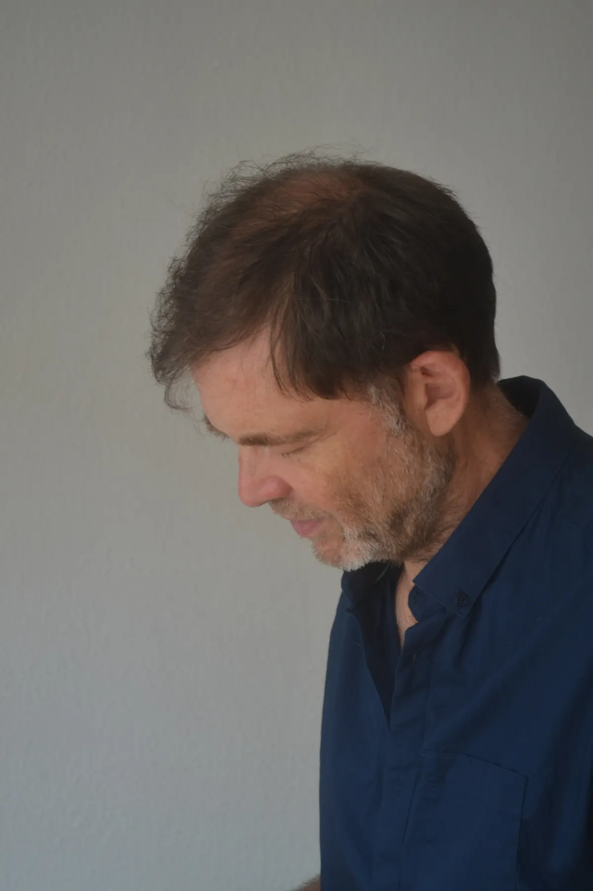

8 à 12 séancesCoaching personnel
Coach personnel
Ni psy, ni guide, ni gourou : un allié.
Le coach n’est ni un psy prêt à vous suivre dans une analyse au long cours, ni un guide donneur de solutions clé en main, encore moins un gourou. C’est un allié qui vous accompagne dans votre projet.
Sans se substituer à vous pour la réflexion, la définition d’un objectif, la prise de décision ou le maintien de la motivation, il vous aide à identifier le chemin qui vous convient, à relativiser l’importance des obstacles, et à découvrir en vous les ressources pour les surmonter.

Quatre principes, un chemin
-
1 · Le point de départ
Un objectif précis
Transformer le problème qui vous occupe en un objectif spécifique, mesurable, réaliste et motivant, avec un horizon temporel proche, c’est commencer à le résoudre. Ainsi commence tout processus de coaching personnel.
-
2 · La durée
Un processus limité dans le temps
L’accompagnement nécessite le plus souvent entre 8 et 12 séances, selon le but fixé et la situation initiale. Si le processus s’avère plus long que prévu, on peut le segmenter en plusieurs étapes, chacune avec son objectif, et s’accorder des pauses entre elles. Parfois, le processus est plus court : il peut alors déboucher sur l’identification d’un nouvel objectif.
-
3 · Le rythme
Des séances régulières
Coach et accompagné conviennent de la fréquence des séances, d’une par semaine à une par quinzaine, en fonction du travail à faire. Fréquence qui peut varier au fil du suivi. Une séance dure généralement entre une heure et 90 minutes, selon ce qui y est travaillé. Le respect des rendez-vous et le maintien de la motivation sont essentiels pour le succès du processus.
-
4 · La méthode
Un dialogue dirigé
Le coach s’appuie ponctuellement sur des exercices relevant de techniques de développement personnel, mais l’essentiel repose sur le dialogue qu’il instaure et dirige. Cet échange permet de progresser dans la perception de la situation et des enjeux.
Le coach aide son client à relativiser l’importance des obstacles qui le gênent et à réévaluer celle des ressources qu’il connaît, voire à en découvrir de nouvelles. À partir du panel d’options qu’il a établi, le client peut élaborer le plan d’action par lequel il atteindra son objectif.
Votre calendrier indicatif
Le rythme se décide ensemble et peut varier au fil du suivi. Ce simulateur donne simplement un ordre de grandeur.
…
Estimation indicative, calculée à partir des repères du coaching : 8 à 12 séances, une par semaine à une par quinzaine, d’une heure à 90 minutes.
Vous gardez la main
Le chemin qui vous convient
La réflexion, l’objectif, la décision et la motivation restent les vôtres : le coach vous aide à identifier votre chemin, sans le choisir à votre place.
Les obstacles à leur juste place
Relativiser l’importance des obstacles qui vous gênent, pour cesser de leur laisser toute la place.
Vos ressources
Réévaluer celles que vous connaissez, en découvrir de nouvelles, puis bâtir votre propre plan d’action.

Formation
Une formation sérieuse
Point commun entre mes activités, des personnes y sollicitaient mes conseils au-delà de mon rôle attitré. Pour répondre à leurs attentes, j’ai suivi une formation de coach personnel.
Diplôme d’école« Coach professionnel »Institut de Coaching d’Alsace · OsthouseOctobre 2021 – avril 2022Tarifs et lieu des séances
tarif d’une séance, lieu des séances, possibilité de séances à distance
Un premier échange
N’hésitez pas à me contacter, même si vous n’êtes pas sûr de recourir à mon accompagnement : je serai ravi d’échanger avec vous.
Choisissez un jour, puis un créneau
Créneaux fictifs pour la démonstration. disponibilités réelles ou lien vers un agenda en ligne
Merci, à bientôt.
Créneau :
Démonstration : aucun rendez-vous n’a été enregistré ni envoyé.